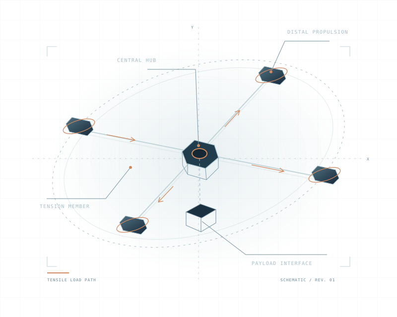

Tensile Scaling
Centrifugally stiffened tension members provide an alternative to the conventional rigid spar. The analytical model investigates structural mass behavior under defined assumptions.
01 / ARCHITECTURE
A rotary-wing architecture that uses rotation to establish structural tension. Understand the principle, the subsystems and the work needed to bring them together.
Rotation · Tension · Load transfer
THE STRUCTURAL INVERSION
Rigid rotor structures rely on material stiffness. TensileEra’s development approach places flexible members in radial tension through rotation, with propulsion and control distributed across the system.
The distinction is the load path. The engineering challenge is to establish the required geometry and keep it controlled through startup, steady operation and recovery.

FOUR CONNECTED SUBSYSTEMS
Structure, controls, power and failure response have to work as one system. These are the four pillars of the development architecture.
Centrifugally stiffened tension members provide an alternative to the conventional rigid spar. The analytical model investigates structural mass behavior under defined assumptions.
Distributed tip-motor control and aeroelastic damping are intended to manage the dynamics of the flexible rotating structure. Sampling rate, controller timing and actuator response are separate verification questions.
The mechanical failsafe concept is intended to retain system geometry during loss-of-power events. Its behavior must be verified across the operating envelope.
High-voltage DC distribution connects power generation to distal propulsion. The powertrain architecture is distinct from an integrated flight-performance result.
A BOUNDED SCALING MODEL
For an idealized rotating tension member at constant tip speed, the self-weight stress is independent of radius. Under that model, a fixed member cross-section gives mass proportional to length.
A complete aircraft adds distal propulsion mass, hub and interfaces, aerodynamic loads, control authority, fatigue, thermal constraints and operating conditions. The member-level relationship does not establish a universal aircraft-level scaling law.
See how evidence is organized ↗
WORK WITH TENSILEERA
Technical partnerships, program inquiries and engineering collaboration.